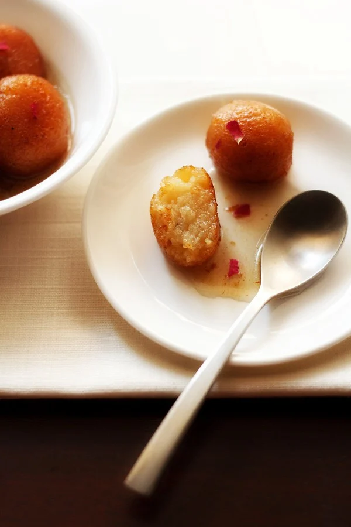
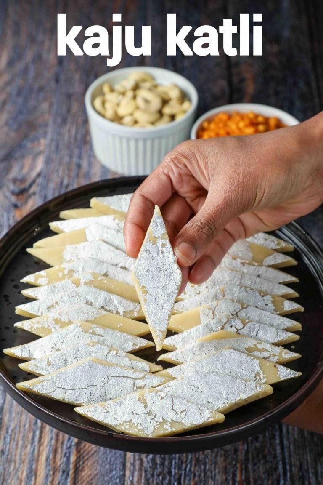

Gulab Jamun
Ingredients
- Sugar
- Bread
- Oil
Recipie
- Take 1 cup khoya or mawa (200 grams) in a bowl. Soft khoya also known as ‘daap ka khoya’ or ‘chikna khoya’ is used. This is a soft khoya, so it mashes and kneads very well.
- Mash khoya very well, ensuring there are no lumps or small bits lurking.
- Then add ¾ cup (100 grams) grated paneer, 2 tablespoons fine rava (semolina), 2 tablespoons all-purpose flour, ¼ teaspoon baking powder and ½ teaspoon cardamom powder to the mashed khoya.
- Mix well
- Add 1 tablespoon milk and gather together to form a dough with milk. Don’t knead, just gently mix.
- Mix 1.75 cups (250 grams) sugar in 1 cup water.
- On a medium-low flame, heat the sugar solution till it becomes thick and sticky. Just be sure to switch off the heat before the syrup reaches a one thread consistency.
- Add rose water and stir. Set the sugar solution aside.
- After 30 minutes, make small balls from the dough without cracks. Cover the dough balls and set aside.
- Heat oil until it is medium-hot. Lower the heat to a medium-low or low and wait for a minute. Then gently place a single dough ball in the oil.
- Once the jamun start to have tiny golden spots, keep on rotating them in the oil so that the balls are evenly browned. Since I was taking the photos, I browned a few of them more.
- Remove the fried dough balls and then place them on paper towels to remove extra oil.
- Place the hot fried dough balls in the sugar syrup. Continue to fry the rest of the dough balls in batches, giving them a quick drain on paper towels before adding them to the sugar syrup while they are still hot.
- When all the gulab jamun are placed in the sugar syrup, then keep the whole pan on a low flame for 1 to 2 minutes. Heating helps the jamun to absorb the syrup and become soft.
- Serve gulab jamun warm or at room temperature. You can also chill them and serve them cold. Garnish them with rose petals or almond slivers. Enjoy!

Kaaju Katli
Ingredients
- 1 cup whole cashews raw cashews, 150 grams
- 1/2 cup granulated white sugar 100 grams
- 1/4 cup water 60 ml
- 1/2 teaspoon rose water
- 1 teaspoon ghee
- edible silver leaves
Recipie
- Place cashews in a spice grinder. I prefer using my spice grinder (this is the one I have) to grind nuts. You can also use a food processor or any other blender you have. Grind to a smooth powder. However don't over grind it else cashews will release oil, you don't want cashew butter! 🙂
- Add sugar and water in a pan on medium heat. You can also add rose water (optional) at this point. Stir to combine.
- Let the sugar melt and then once the sugar melts, let the mixture boil for 1 minute. We are not looking for any sugar syrup consistent here.
- Then lower the heat and add in the powdered cashews. Stir to combine.
- Keep stirring the mixture on low heat. Add a teaspoon of ghee and stir. Ghee makes the mixture smooth and also adds some shine to the katli.
- Keep stirring, after around 10 minutes on low heat, the dough will leave the sides of the pan. This is the stage when you want to remove pan from heat. You can check if the dough is done or not by taking a small piece from mixture, let it cool down a little and then roll it between your thumb and index finger. You should be able to make a non-sticky ball out of it. It means your dough is done. If not, you need to cook it further. It will be done around 10-12 minutes on low heat though.
- Once the dough is done, transfer it to a sheet of parchment paper.
- Wait for 3 to 4 minutes for the dough to cool down a bit. Then knead the dough with your hands to make it smooth. You have to knead the dough while its warm. But be careful to not burn your fingers. Let it cool down a little and only then attempt to knead. Also if the dough looks very dry while kneading, you can sprinkle some water or milk to make it smooth.
- Then place another sheet of parchment paper on top of the dough. Roll to 1/4 to 1/2 inch thick using a rolling pin applying equal pressure on all sides.
- Once rolled, apply chandi vark if using. Cut the dough into diamond shape by first cutting the dough vertically and then horizontally.
- Separate the kaju katli and enjoy! You can store the kaju katli in the refrigerator for up to a week.
